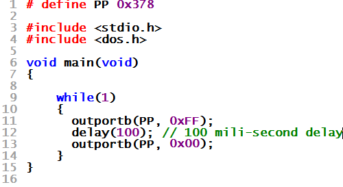

| WR Home Topic Home | Chapter: 1 |
| <Previous | Next> |
Chapter 01
Hello World in the Hardware World !
Page 4
In the above code a ‘delay’ of 100 mili-second is introduced so that user can see the LED’s glowing. Can the user now visualize the bliking of the LEDs.
The answer is still No.
Why?
Because:
As per line 11, LEDs are switched ON
Line 12 delays the program for 100 ms (wait for 100 ms)
Line 13 switches OFF the LEDs
Line 14, 9, 10, 11 are executed in a fraction of mili-second and all LEDs glow again. The user dosent get enough time to view the LEDs in the OFF state. So the user see all LEDs are ON all the time.
| WR Home Topic Home | Chapter: 1 |
| <Previous | Next> |